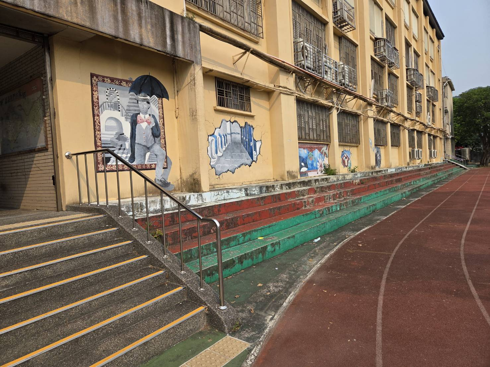

優雅的藝術氣息：遠近馳名的美術班
泰山國中是一個充滿藝術氣息的書香校園，有遠近馳名的美術班，在校園多處留下美麗的畫作，妝點優雅的藝術氣息。漫步在校園中，您會驚喜地發現在走廊、穿堂與階梯旁，都留下了充滿想像力的壁畫，為全體師生營造出優美且充滿活力的學習環境。

穿堂磚牆上生動的「愛麗絲夢遊仙境」彩繪，展現學生的豐富創意。

操場階梯旁的「撐傘紳士」3D藝術壁畫，為校園妝點優雅的氣息。
會呼吸的生態校園：鳥鳴伴隨讀書聲
泰山國中也是生態校園，校園處處都有樹齡超過50年的老樹，樹冠非常龐大，綠樹成蔭，處處可見鳥類、松鼠的踪跡，優美的鳥鳴聲伴隨讀書聲，更添泰山國中美麗的景緻。此外，校園內靜謐的生態水池更孕育了豐富的動植物生態，這座會呼吸的校園，就是學生們最棒的大自然教室。

樹冠龐大、綠樹成蔭的老樹，不時能聽見優美的鳥鳴聲伴隨讀書聲。

古樸雅致的生態水池與假山石景，讓校園處處充滿自然的生機。